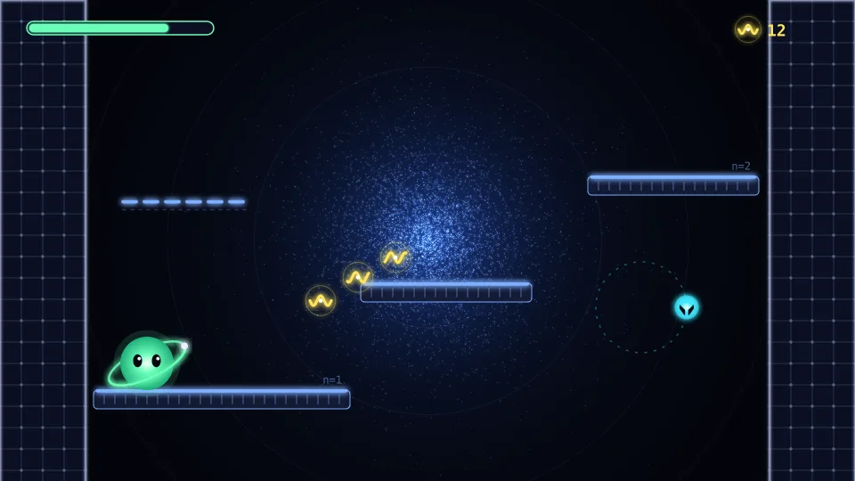
Tres segundos de la Capa K. Wilas corre, salta, recoge fotones, dispara a un electrón orbital (las trazas en espiral son su desintegración) y encadena un salto cuántico hasta la siguiente plataforma. Cada fotograma sale del generador.
Tres promesas visuales
AtomicJump pide un estilo que se lea al instante bajo presión, que se sienta cuántico sin necesitar explicación y que pueda producirse al ritmo de un roguelike que no para de crecer.
Luz sobre el vacío
Fondo casi negro y todo lo importante emite luz. El contraste máximo hace que el ojo encuentre siempre lo que importa: tú, lo que te daña y lo que recoges.
Física de verdad
Los fondos son las nubes de probabilidad reales de cada capa. Los enemigos tienen el color de su carga eléctrica. Las estelas imitan las trazas de una cámara de burbujas. Quien sepa física sonreirá, y quien no, lo sentirá coherente.
Legible a 60 FPS
Siluetas únicas, un código de color estricto y reglas que nunca se rompen. En plena lluvia de muones sabes qué es cada cosa sin leer un solo texto.
Pensado para tu juego y para tu forma de producirlo
El arte provisional deja de existir
Cada asset nace ya con el estilo final. Desde la Fase 4 del roadmap, todo lo que pruebes se verá como el juego terminado, no como un prototipo de Kenney.
Coherente por construcción
Una sola paleta y un solo conjunto de reglas alimentan todos los generadores. Es imposible que el enemigo número 12 no encaje con el número 1.
Paramétrico
¿La Capa M debería ser más fría? Se cambia un color y se regenera todo en segundos. ¿Wilas con un orbital más grueso? Una línea.
Independiente de la resolución
Vectorial: nítido en 720p, 1080p, 4K y Steam Deck. Resolución de referencia: 1280×720 con escalado canvas_items.
Versionable
Todo el arte es texto (Python, SVG y shaders): diffs legibles en git, revisión en PR y reproducible desde cero con un comando.
No envejece
Los estilos geométricos y luminosos (Geometry Wars, Osmos, Thumper) se ven igual de bien diez años después. El detalle realista envejece; la geometría no.
Cada color tiene un trabajo
Ningún color es decorativo. Si algo brilla en cian, es carga negativa; si brilla en menta, eres tú. La paleta vive en art/atomic_art/palette.py y la leen todos los generadores.
Vacío#05070F · fondo
Vacío 2#0B1022 · paneles, paredes
Vacío 3#141B36 · rellenos
Luz#EAF2FF · texto, líneas
Luz tenue#8C97B8 · secundario
Jugador#6BFFB8 · exclusivo de Wilas y su coherencia
Carga −#3DE8FF · electrones, muones, tau
Carga +#FF3D8B · protones, alfa, positrón, peligro
Neutra#DCE3F5 · neutrones, neutrinos, Z
Decoherencia#C9D2FF · la amenaza
Electromagnética#FFE45C · y los fotones
Fuerte#FF6A3D
Débil#C6FF3D
Gravitatoria#8F7BFF
Cuántica#FF7BF1
Fundamentalcomún
Excitadoraro
Resonanteépico
Unificadolegendario · Higgs
Capas K · L · M · Ntinte del orbital
Seis reglas que nunca se rompen
Estas reglas son el contrato entre el arte y la jugabilidad. Están codificadas en los generadores: no dependen de que alguien se acuerde.
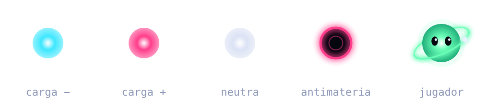
El color es la carga. Cian negativa, magenta positiva, blanco frío neutra. Aprendes a leer el juego aprendiendo física, sin darte cuenta.
Relleno es materia, hueco es antimateria. El positrón y el antiprotón son vacío rodeado de luz: su imagen en negativo.
Ojos redondos solo para el jugador. Los enemigos tienen ojos rasgados. Wilas es el único que te mira con cariño.
La traza anticipa el movimiento. Cada enemigo dibuja su huella: la órbita del electrón, la estela vertical del muón, las líneas de embestida de la alfa.
La forma del marco es la familia. Círculo EM, hexágono Fuerte, triángulo Débil, rombo Gravitatoria, estrella Cuántica y cuadrado para los observables.
La joya es la rareza. Un pequeño rombo bajo cada icono. Nunca se usa el color de rareza para otra cosa.
Wilas: una partícula con alma
Un núcleo luminoso, un orbital inclinado que lo abraza con su electrón y dos ojos enormes. Toda la personalidad está en la mirada y en cómo se deforma: el cuerpo es una esfera perfecta que se estira al saltar y se aplasta al caer.
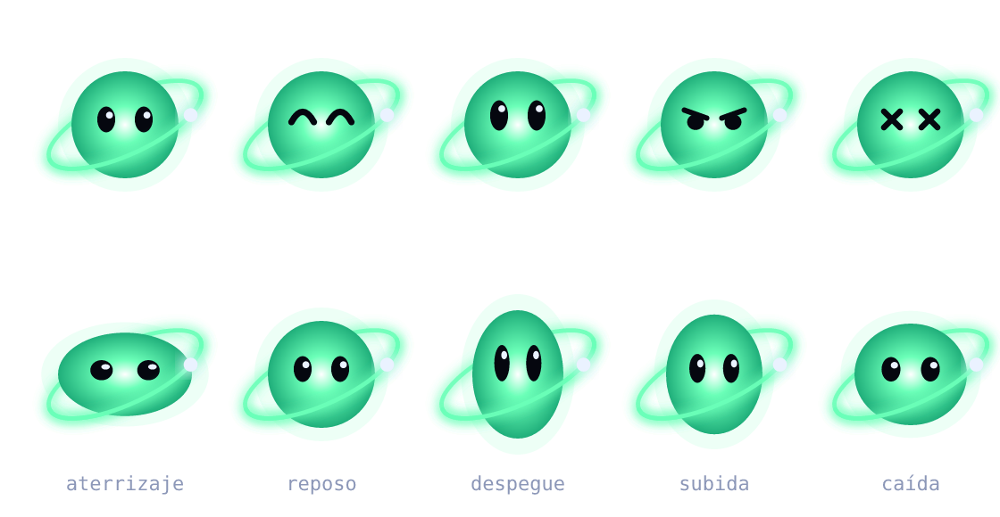
Expresiones: reposo · alegría · salto · concentración · daño. Debajo, la deformación elástica (squash & stretch), animada en el motor con tweens.
En movimiento
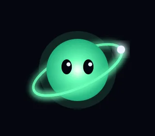
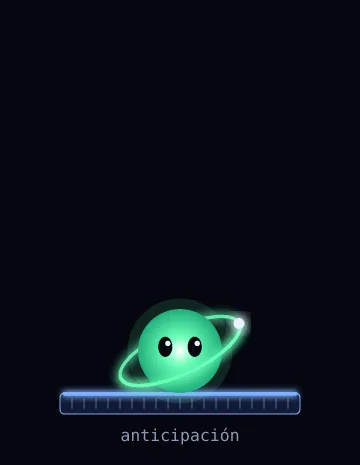
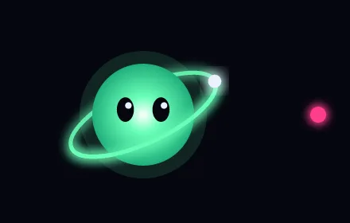
Principios de animación
Nada está quieto. Todo lo vivo respira, orbita o vibra. El vacío es lo único que no se mueve.
Anticipar y deformar. Las esferas se aplastan antes de saltar y al caer. La forma perfecta solo existe en reposo.
Avisar antes de golpear. Cada ataque enemigo tiene un aviso de 300–500 ms: una línea, un anillo o un parpadeo.
Los impactos se sienten. Destello, retroceso, hitstop de 40–60 ms y una traza que se desvanece.
La física manda. Las órbitas son elipses, las cargas dejan espirales y la aniquilación emite dos fotones opuestos.
Todo en el motor. Tweens, AnimationPlayer y shaders sobre formas vectoriales: no hay hojas de sprites que redibujar.
Personajes desbloqueables
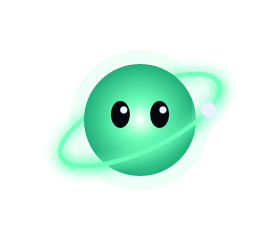
Wilas
Equilibrado. El orbital simple y limpio.
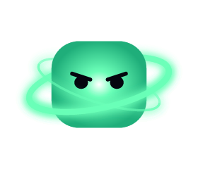
Muón
Tanque. Cuerpo cuadrado y doble anillo grueso: se ve pesado antes de moverse.
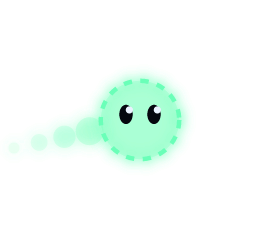
Neutrino
Fantasma. Contorno punteado y semitransparente; deja ecos de sí mismo.
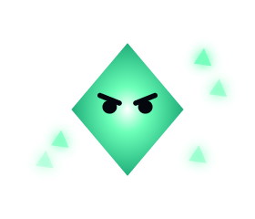
Tau
Riesgo. Un rombo afilado que suelta fragmentos: literalmente se está desintegrando.
Cada enemigo es un fenómeno
La silueta cuenta cómo se mueve y el color cuenta qué es. Tres enemigos por capa, cada uno con una lectura instantánea.
Capa K
1s · aprender a leer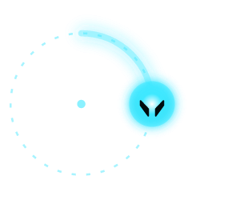
Electrón orbital −
Su órbita punteada te dice exactamente por dónde pasará.
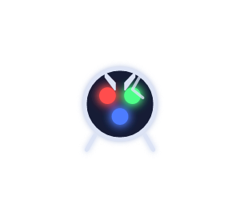
Neutrón libre 0
Una cápsula con sus tres quarks (udd) dentro. La grieta avisa: al morir se desintegra.
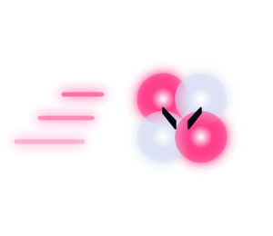
Partícula alfa +
Dos protones y dos neutrones. Las líneas de velocidad anuncian la embestida.
Capa L
2p · amenazas desde arriba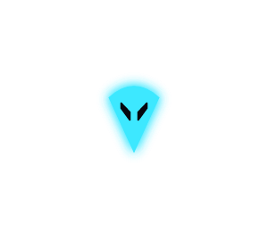
Muón −
Una gota que cae en picado; su estela vertical aparece antes que él.
Kaón 0
Mitad sólido, mitad fantasma: oscila entre vulnerable e intangible.
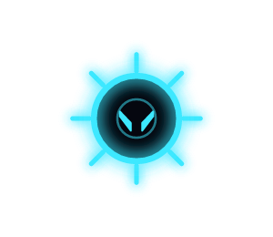
Antiprotón − anti
Vacío rodeado de púas de luz. Si te toca, os aniquiláis los dos.
Capa M
3d · lo que casi no se ve
Neutrino 0
Casi invisible: una mira punteada que solo destella.
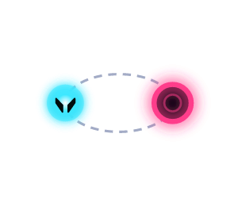
Partículas virtuales ±
Materia y antimateria unidas por un bucle de Feynman. Mata a las dos o explotan.
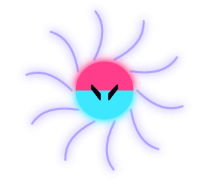
Monopolo N/S
Sus líneas de campo curvan tus disparos. Se ve el campo, no se adivina.
Capa N
4f · el caos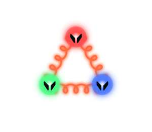
Trío de quarks color
Rojo, verde y azul unidos por muelles de gluón. Si estiras uno, el muelle se rompe y crea más.
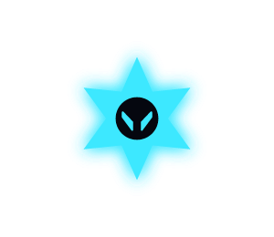
Tau −
Élite. La silueta más agresiva del juego: una estrella de doce puntas.
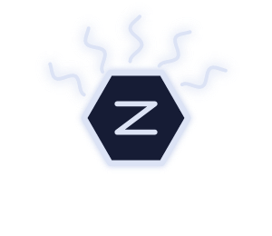
Bosón Z 0
Torreta hexagonal que emite ondas en abanico; la Z se lee de lejos.
Cómo se mueven
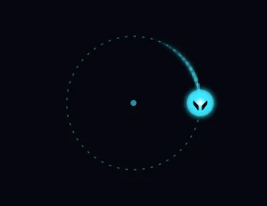
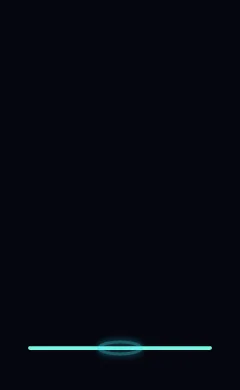
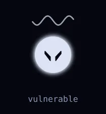
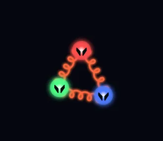
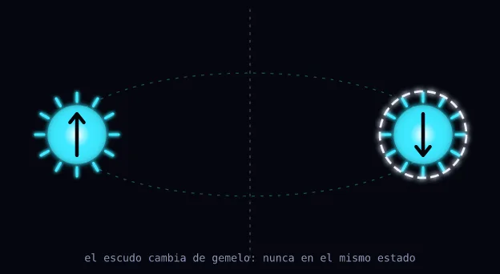
Par de Pauli
Dos electrones gemelos con el espín opuesto (↑ ↓), siempre en espejo respecto al eje central. El principio de exclusión hecho mecánica: el escudo punteado cambia de uno a otro y nunca pueden ser vulnerables a la vez. Las coronas de luz marcan su tamaño de jefe sin romper la geometría del resto del juego.
Cuatro capas, cuatro orbitales reales
El fondo de cada capa es la densidad de probabilidad real de su orbital característico, calculada con las funciones de onda del átomo de hidrógeno. Los puntos son "mediciones" muestreadas de esa distribución, como en los libros de texto. En el juego será un shader con una animación sutil.
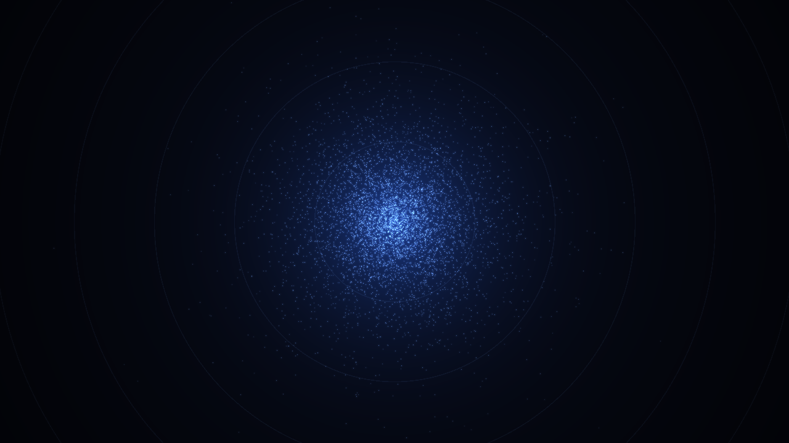
Capa K · 1s
Una nube esférica y serena. El lugar donde aprendes.
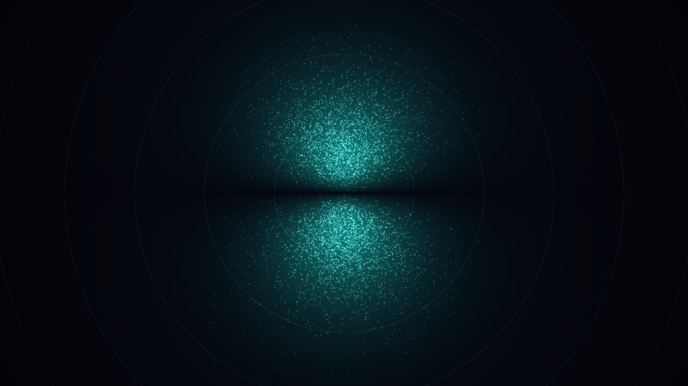
Capa L · 2p
Dos lóbulos separados por un plano nodal: el mundo empieza a dividirse.
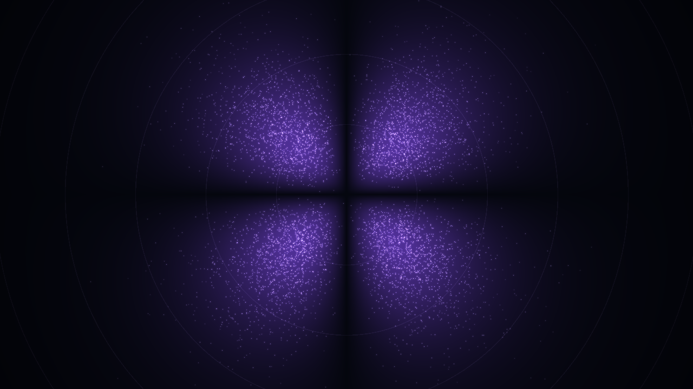
Capa M · 3d
Un trébol de cuatro lóbulos; la geometría se complica.
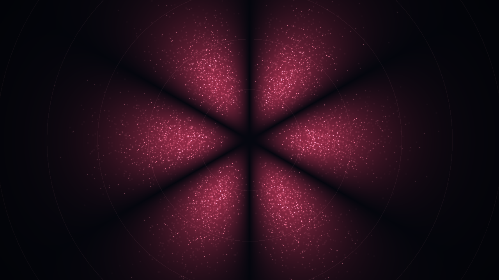
Capa N · 4f
Seis pétalos en rojo: la última capa antes de la ionización.
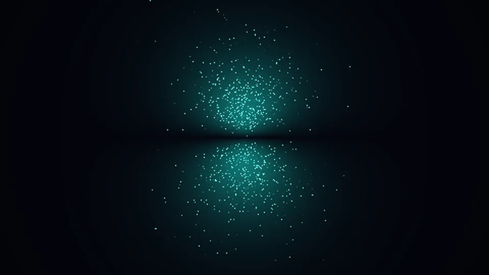
El fondo respira
En el juego, el fondo es un shader: la nube late despacio y las "mediciones" aparecen y se apagan como si alguien estuviera observando el átomo. Es movimiento ambiental que nunca compite con la acción.
Plataformas: niveles de energía
Las plataformas son niveles de energía: barras con el borde superior luminoso y marcas de escala. Las atravesables son niveles "virtuales" discontinuos; las paredes, una retícula cristalina; los peligros, la gráfica literal de un potencial con picos.
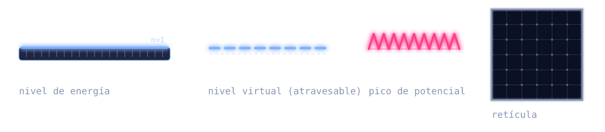
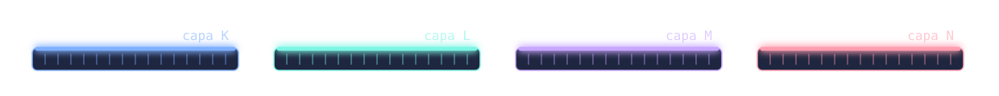
La Decoherencia
La amenaza no es un color más: es la ausencia de forma. Un frente de ruido pálido que disuelve en bloques lo que toca, con líneas de escaneo. Contrasta con todo lo demás, que es geometría limpia.
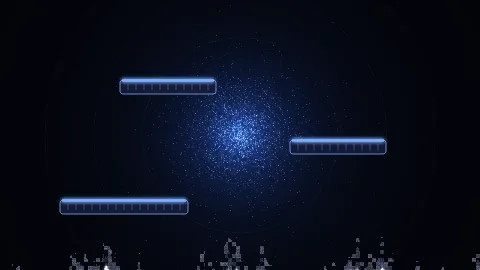
El frente ondula de forma continua, el ruido cambia en cada fotograma y los bloques se desprenden por delante como si el mundo se pixelara al perder coherencia. Se traga las plataformas sin cortarlas: simplemente dejan de existir bajo el ruido.
Bifurcaciones
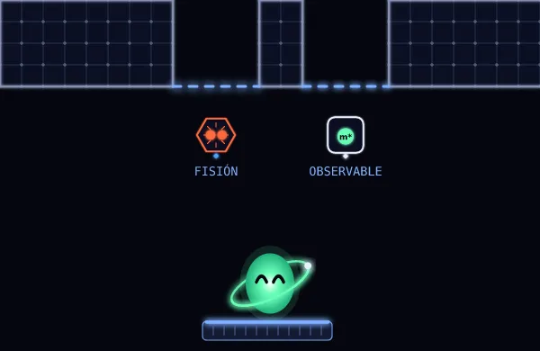
Cada salida muestra su recompensa. Al cruzar una, la otra colapsa: la pared se cierra, el icono se encoge y se disuelve en fragmentos. Es la función de onda eligiendo un estado, y el jugador lo entiende sin leer nada.
Cosas que dan ganas de coger
Nada de monedas, llaves ni cofres: cada objeto de la economía es un fenómeno que se entiende a simple vista.
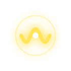
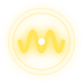
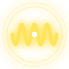
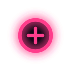
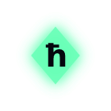
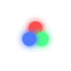
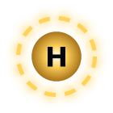
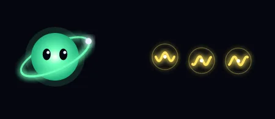
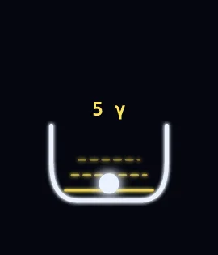
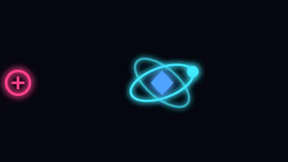
Los fotones son paquetes de ondas: más valor = más periodos y más halos. El quark lleva las tres cargas de color. El Higgs luce su halo discontinuo, como su propagador en un diagrama de Feynman.
Pozo cuántico
El objeto duerme en el fondo del pozo. Los niveles de energía se iluminan al pagar fotones y el objeto "salta" fuera.
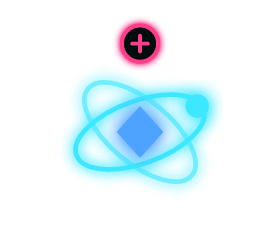
Electrón ligado
Un electrón custodia el objeto en órbita cerrada. El signo e⁺ te dice qué necesitas: aniquilación y destello.
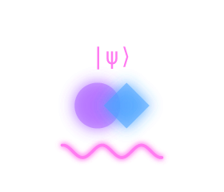
Superposición
Dos objetos semitransparentes en el mismo sitio, bajo un |ψ⟩. Al tocar uno, el otro colapsa.
Un sistema, no cien dibujos
El juego necesitará más de cien iconos. En lugar de dibujarlos uno a uno, propongo una gramática: marco (familia) + glifo (el efecto, a menudo un mini diagrama de Feynman) + joya (rareza). Un icono nuevo es una combinación nueva, y siempre encaja.
"Salto iónico" es un electrón emitiendo un fotón; "Confinamiento", el intercambio de un gluón; "Desintegración beta", el diagrama n → p e⁻ ν̄. Divulgación escondida en la interfaz.
La firma: trazas de cámara de burbujas
Las partículas cargadas dejan espirales que se cierran al perder energía en un campo magnético. Es la imagen más reconocible de la física de partículas, y aquí es el ADN de todos los efectos: disparos, impactos, muertes y transiciones de capa.
El proyectil de Wilas es un paquete de ondas: una cabeza brillante y una estela que ondula. Cada familia de interacción cambiará el color y la forma de la estela, así que tu build se ve en tus disparos.
Hecha para la captura
El HUD vive en las esquinas y deja el centro libre para la acción vertical. Y la tarjeta de partida es el cartel que tus jugadores compartirán: la semilla en grande, el build en iconos y una composición limpia a 16:9.
HUD sobre una captura simulada: coherencia y saltos disponibles, capa y altura, divisas, operador e interacciones por ranura. Arriba, las dos salidas de una bifurcación con su recompensa.
Tarjeta de partida · diseñada para hacerle captura y enviarla. La semilla es lo primero que se lee.
Del código a la pantalla
Todo el arte sale de un proyecto Python en art/. Lo genero, lo renderizo, lo miro y lo corrijo, en ciclos de minutos. Cuando pidas un enemigo nuevo, llega con el estilo del resto sin que tengas que tocar nada.
palette.pyTokens de color y reglas del lenguaje visual.
characters.py · enemies.py · items.py · world.pyCada asset es una función. NumPy calcula los orbitales.
uv run build…Vectores para Godot y renders para revisar.
hoja de contactosRenderizo y compruebo la coherencia del conjunto.
import SVG · shaders · tweensEl motor pone el brillo, el movimiento y la vida.
Lo que hace el generador
Formas, colores, composiciones, atlas de tiles, iconos, fondos orbitales, texturas de ruido y los SFX, sintetizados al estilo sfxr.
Lo que hace el motor
El brillo (glow: el importador SVG de Godot no admite filtros, así que se aplica con el glow del entorno o con un shader de bloom), los fondos animados por shader, la Decoherencia, las partículas y toda la animación: órbitas que giran, squash & stretch y parpadeos.
Lo que te digo con sinceridad
Este estilo tiene un techo deliberadamente minimalista: no habrá ilustraciones detalladas ni retratos pintados. La personalidad sale de la forma, el color, el movimiento y el game feel. Para la música te recomiendo una librería o un encargo externo: puedo generar efectos de sonido coherentes, pero no música a la altura del juego. Las fuentes (Space Grotesk y JetBrains Mono) son libres, de Google Fonts.
El arte acompaña al roadmap
No hace falta esperar a la Fase 13: el estilo es barato de producir, así que el arte crece a la vez que el juego.
| Fase del roadmap | Entregables de arte |
|---|---|
| 2 · Refactor | Tema de UI base (fuentes, colores y paneles) y guía de estilo en docs/13-art-style.md. |
| 4 · Movimiento | Wilas final con sus expresiones y deformación; shader de la Decoherencia; glow configurado. |
| 5 · Tramos | Tileset de la Capa K (niveles, virtuales, retícula, picos) como atlas generado; fondo orbital 1s en shader. |
| 6 · Combate | Enemigos de la Capa K, proyectiles, impactos y muertes (trazas). |
| 7–8 · Objetos | Recogibles, contenedores y sistema de iconos con los primeros ~40 iconos. |
| 9 · Demo | Par de Pauli, tarjeta de partida y SFX de la Capa K. Demo publicable en itch.io con arte final. |
| 10–12 · Juego completo | Núcleo (lobby), capas L, M y N (tiles, fondos, enemigos y jefes), personajes y el resto de iconos. |
| 13–14 · Pulido | Pasada global de coherencia, VFX de alto impacto, transiciones de capa, accesibilidad (modo daltónico: la forma ya distingue familias y rarezas). |
¿Encendemos la luz?
Si esta dirección te convence, la guía de estilo ya está en docs/13-art-style.md y el siguiente paso es dejar el generador listo para producir los assets de la Fase 4. Todo lo que ves aquí se regenera con un comando:
cd art && uv run build_art_direction.py